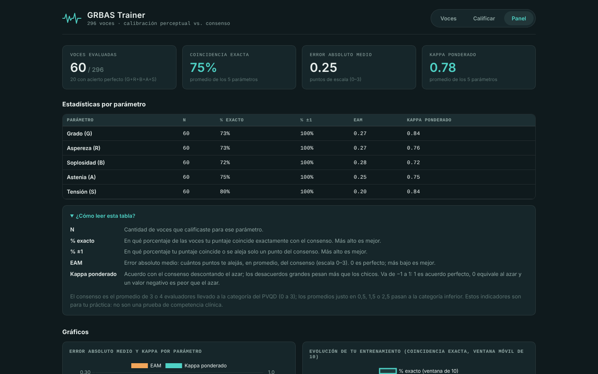
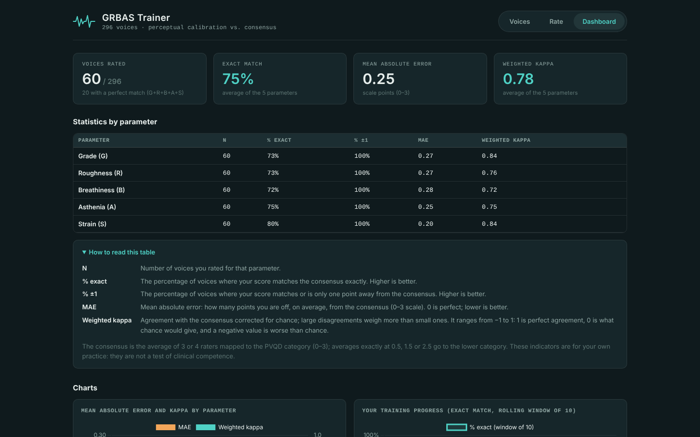
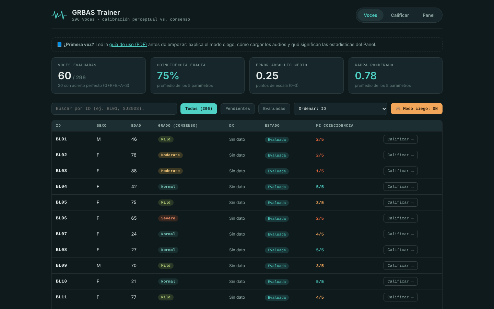
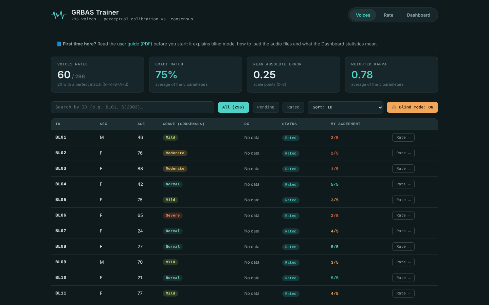
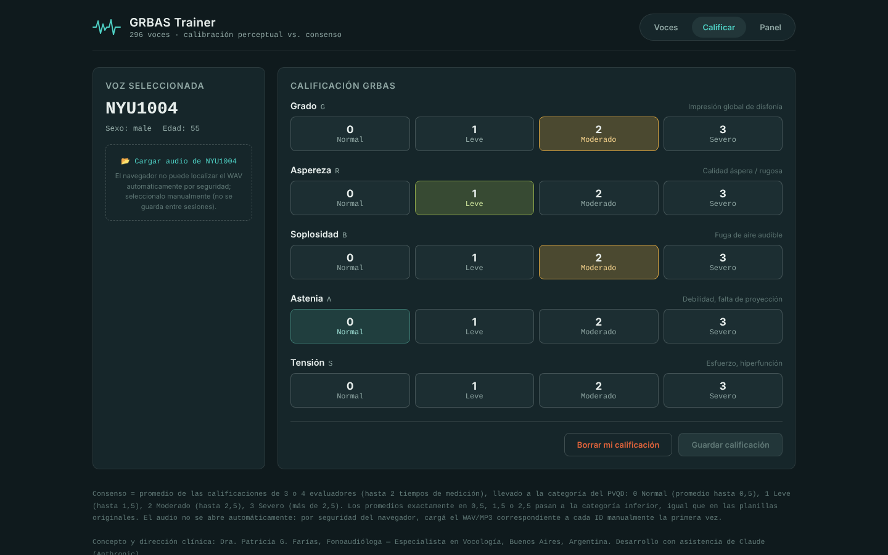

Herramienta educativa gratuitaFree educational tool
Entrená tu escucha de la calidad vocal.Train your ear for voice quality.
Calificá 296 voces con la escala GRBAS, compará tus resultados con el consenso de evaluadores expertos y mirá cómo mejora tu calibración perceptual con el tiempo.Rate 296 voices with the GRBAS scale, compare your ratings with an expert-rater consensus, and watch your perceptual calibration improve over time.
- GRBAS
- Español · EnglishEnglish · Español
- Sin instalar nadaNothing to install
- No envía tus datosYour data stays with you


Qué esWhat it is
GRBAS Trainer es una aplicación web para practicar la evaluación auditivo-perceptual de la voz. Usa la Perceptual Voice Qualities Database (PVQD), una base de datos pública de voces calificadas por clínicos con experiencia.GRBAS Trainer is a web app for practicing auditory-perceptual voice evaluation. It uses the Perceptual Voice Qualities Database (PVQD), a public database of voices rated by experienced clinicians.
Está pensada para fonoaudiólogos, otorrinolaringólogos, foniatras, docentes y estudiantes que quieran afinar su criterio. Es de uso educativo: no es un instrumento de diagnóstico clínico.It is designed for speech-language pathologists, otolaryngologists, phoniatricians, teachers and students who want to sharpen their listening. It is for educational use: it is not a clinical diagnostic instrument.
Qué podés hacerWhat you can do
Calificar a ciegasRate blind
El consenso y el diagnóstico se ocultan hasta que guardás tu calificación, para no sesgar tu percepción.The consensus and diagnosis stay hidden until you save your rating, so they cannot bias your perception.
CompararCompare
Contrastá tus puntajes con el consenso y con la calificación de cada evaluador de esa voz.Contrast your scores with the consensus and with the ratings of each rater of that voice.
MedirMeasure
Kappa ponderado, error absoluto medio y porcentaje de coincidencia exacta, por parámetro.Weighted kappa, mean absolute error and exact-match percentage, per parameter.
Seguir tu evoluciónTrack progress
Un gráfico de entrenamiento con ventana móvil y exportación de tus calificaciones en JSON o CSV.A rolling-window training chart, plus export of your ratings as JSON or CSV.
Cómo funcionaHow it works
Cinco parámetros (Grado, Aspereza, Soplosidad, Astenia y Tensión), cada uno de 0 (normal) a 3 (severo).Five parameters (Grade, Roughness, Breathiness, Asthenia and Strain), each rated from 0 (normal) to 3 (severe).



Las capturas usan calificaciones de práctica simuladas, solo para ilustrar la interfaz; no son resultados reales.Screenshots use simulated practice ratings, only to illustrate the interface; they are not real results.
Recomendado en computadora, con auriculares. Funciona sin internet si guardás el archivo en tu equipo. En celular se puede usar, pero cargar los audios es más incómodo.Best on a computer, with headphones. It works offline if you save the file on your device. It can be used on a phone, but loading the audio files is more awkward.
Datos y créditosData and credits
Los datos pertenecen a la PVQD, creada por Patrick R. Walden y publicada con licencia CC BY 4.0. Esta herramienta no incluye los archivos de audio: se descargan una sola vez, gratis, desde la página de la base, y se cargan desde tu dispositivo.The data belong to the PVQD, created by Patrick R. Walden and released under a CC BY 4.0 license. This tool does not include the audio files: you download them once, for free, from the database page and load them from your own device.
Walden, P.R. (2022). Perceptual Voice Qualities Database (PVQD). Mendeley Data, V4. doi.org/10.17632/9dz247gnyb.4
Walden, P.R. (2022). Perceptual Voice Qualities Database (PVQD): Database characteristics. Journal of Voice, 36(6), 875.e15–875.e23. doi.org/10.1016/j.jvoice.2020.10.001
Escala GRBAS: GRBAS scale: Hirano, M. (1981). Clinical Examination of Voice (Disorders of Human Communication, vol. 5). Springer-Verlag.
PrivacidadPrivacy
- Todo corre en tu navegador.Everything runs in your browser.
- Tus calificaciones se guardan solo en tu dispositivo; no se envían a ningún servidor.Your ratings are stored only on your device; nothing is sent to any server.
- No hay cuentas ni seguimiento de usuarios.No accounts and no user tracking.
Alcance y límitesScope and limits
- Es una herramienta educativa, no diagnóstica.It is an educational tool, not a diagnostic one.
- El consenso es el de los evaluadores de la PVQD.The consensus is that of the PVQD raters.
- Su efecto como método de entrenamiento todavía no está validado; estoy abierta a colaborar en esa validación.Its effect as a training method has not yet been validated; I welcome collaboration on that validation.
AutoraAuthor
Dra. Patricia G. Farías
Fonoaudióloga — Especialista en Vocología. Buenos Aires, Argentina.Speech-Language Pathologist — Vocology Specialist. Buenos Aires, Argentina.
Proyecto independiente, desarrollado con la asistencia de Claude (Anthropic).Independent project, developed with the assistance of Claude (Anthropic).
Cómo citarHow to cite
Farías, P.G. (2026). GRBAS Trainer: herramienta de entrenamiento audioperceptual de la calidad vocalan auditory-perceptual training tool for voice quality (v1.0.1) [Software]. DOI: https://doi.org/10.5281/zenodo.23549074 (cita todas las versiones)(cites all versions)
Pedí tu accesoGet your access
Completá un breve formulario y recibís el enlace a la herramienta por correo. Es gratis y de uso no comercial.Fill in a short form and you will receive the link to the tool by email. It is free and for non-commercial use.
Solicitar accesoRequest access
¿Dudas o comentarios? Escribime aQuestions or feedback? Write to dra.patricia.farias@gmail.com